What dialysis can — and cannot — do in the ICUAno ang kaya — at hindi kaya — ng dialysis sa ICUUnsa ang mahimo — ug dili mahimo — sa dialysis sa ICUNanu ing kaya — at e kaya — ning dialysis king ICU
"The kidneys have stopped working well. We may need to start dialysis." Hearing this in the intensive care unit (ICU) is frightening. This page explains, in plain words, what dialysis can do for your loved one, what it cannot do, and how the team decides, together with you, whether it is helping."Hindi na maayos ang paggana ng mga bato. Maaaring kailangan nang simulan ang dialysis." Nakakatakot itong marinig sa intensive care unit (ICU). Ipinapaliwanag ng pahinang ito, sa simpleng salita, kung ano ang magagawa ng dialysis para sa iyong mahal sa buhay, kung ano ang hindi nito magagawa, at kung paano nagpapasya ang team — kasama ka — kung nakakatulong ba ito."Dili na maayo ang paglihok sa mga bato. Tingali kinahanglan na sugdan ang dialysis." Makahadlok kini madungog sa intensive care unit (ICU). Kini nga panid nagpatin-aw, sa yanong pulong, kung unsa ang mahimo sa dialysis alang sa imong minahal, unsa ang dili niini mahimo, ug unsaon sa team pagdesisyon — uban kanimo — kung nakatabang ba kini."E na mayap ing pamagobra da reng batu. Malyaring kailangan neng simulan ing dialysis." Makatakut yang dinan iti king intensive care unit (ICU). Ipaliwanag na ning bulung a iti, king simpling amanu, nung nanu ing agawa ning dialysis para king kamaganakan mu, nung nanu ing e na agawa, at nung makananu ya mamagpasya ing team — kayabe ka — nung makatulung ya.
Healthy kidneys clean the blood, remove extra water, and keep potassium and acid at safe levels. When a serious illness such as a severe infection or very low blood pressure suddenly injures the kidneys, this is called acute kidney injury (AKI). Dialysis uses a filter outside the body to take over some of that work. The team may call it kidney replacement therapy (KRT), or continuous renal replacement therapy (CRRT) when the machine runs slowly around the clock.Ang malulusog na bato ay naglilinis ng dugo, nag-aalis ng sobrang tubig, at pinapanatiling ligtas ang antas ng potassium at acid. Kapag biglang napinsala ng malubhang sakit — gaya ng matinding impeksyon o napakababang presyon ng dugo — ang mga bato, tinatawag itong acute kidney injury (AKI). Ang dialysis — maaaring tawagin ito ng team na kidney replacement therapy (KRT), o continuous renal replacement therapy (CRRT) kapag dahan-dahang tumatakbo ang makina buong araw at gabi — ay gumagamit ng filter sa labas ng katawan upang akuin ang bahagi ng gawaing iyon.Ang himsog nga bato naglimpyo sa dugo, nagtangtang sa sobrang tubig, ug nagpabiling luwas ang lebel sa potassium ug acid. Kung kalit nga madaot sa grabeng sakit — sama sa grabeng impeksyon o ubos kaayo nga presyon sa dugo — ang mga bato, gitawag kini og acute kidney injury (AKI). Ang dialysis — tingali tawgon kini sa team og kidney replacement therapy (KRT), o continuous renal replacement therapy (CRRT) kung hinay-hinay nga modagan ang makina adlaw ug gabii — mogamit og filter sa gawas sa lawas aron sa pag-ako sa bahin sa maong trabaho.Ing malusug a batu linisan ne ing daya, ilako ne ing sobrang danum, at panatilian nang ligtas ing antas ning potassium at acid. Nung biglang menyakit ing batu uli ning malalang sakit — anti ning matinding impeksyon o mababa dapat a presyon ning daya — aus deti acute kidney injury (AKI). Ing dialysis — malyari neng ausan ning team a kidney replacement therapy (KRT), o continuous renal replacement therapy (CRRT) nung dahan-dahan ya manalakad ing makina aldo at bengi — gagamit yang filter king pali ning katawan bang akuan ne ing bage ning obrang ita.
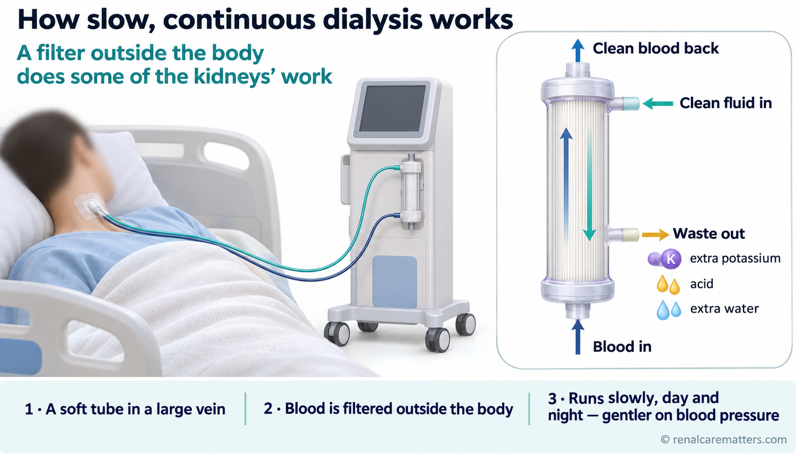
A soft tube in a large vein carries blood to a filter outside the body. The filter removes extra potassium, acid, and water, and the cleaned blood goes back. It runs slowly, day and night.Isang malambot na tubo sa malaking ugat ang nagdadala ng dugo sa filter sa labas ng katawan. Inaalis ng filter ang sobrang potassium, acid, at tubig, at ibinabalik ang nalinis na dugo. Dahan-dahan itong tumatakbo, araw at gabi.Usa ka humok nga tubo sa dakong ugat ang modala sa dugo ngadto sa filter sa gawas sa lawas. Tangtangon sa filter ang sobrang potassium, acid, ug tubig, ug ibalik ang nalimpyohan nga dugo. Hinay-hinay kini modagan, adlaw ug gabii.Metung a malambut a tubu king maragul a ugat ing magdala daya king filter king pali ning katawan. Ilako na ning filter ing sobrang potassium, acid, at danum, at ibalik ing melinis a daya. Dahan-dahan yang manalakad, aldo at bengi.
- ICU
- Intensive care unit
What dialysis can doAng kaya ng dialysisAng mahimo sa dialysisIng kaya ning dialysis
Lower a dangerous potassium, correct too much acid in the blood, and remove extra fluid that is crowding the lungs. It buys time.Pababain ang mapanganib na potassium, itama ang sobrang acid sa dugo, at alisin ang sobrang tubig na sumisikip sa baga. Nagbibigay ito ng panahon.Pakunhoron ang delikado nga potassium, itul-id ang sobrang acid sa dugo, ug tangtangon ang sobrang tubig nga nagpugong sa baga. Naghatag kini og panahon.Pababan ne ing delikadung potassium, ayusan ne ing sobrang acid king daya, at ilako ne ing sobrang danum a pipigipit king baga. Dadanan nang panaun.
What it cannot doAng hindi nito kayaAng dili niini mahimoIng e na kaya
It does not cure the infection, heal the heart or lungs, or wake the brain. Whether a person recovers depends mostly on the illness that caused the kidney injury.Hindi nito pinapagaling ang impeksyon, ang puso o baga, o ginigising ang utak. Ang paggaling ay nakasalalay higit sa lahat sa sakit na naging sanhi ng pinsala sa bato.Dili kini makaayo sa impeksyon, sa kasingkasing o baga, o makapamata sa utok. Ang pagkaayo nagdepende kasagaran sa sakit nga hinungdan sa kadaot sa bato.E na pagaling ing impeksyon, ing pusu o baga, o e na pukawan ing utak. Ing pamagaling masyadu yang makasalalay king sakit a sinabi ning pinsala king batu.
What it costs the bodyAng kapalit sa katawanAng bayad sa lawasIng kapalit king katawan
A large catheter in a vein, a risk of bleeding or infection, drops in blood pressure, and sometimes a need for dialysis that lasts beyond the hospital stay.Malaking catheter sa ugat, panganib ng pagdurugo o impeksyon, pagbaba ng presyon ng dugo, at minsan ay pangangailangan ng dialysis na lampas sa pananatili sa ospital.Dakong catheter sa ugat, peligro sa pagdugo o impeksyon, pagkunhod sa presyon sa dugo, ug usahay panginahanglan og dialysis nga molapas sa pagpuyo sa ospital.Maragul a catheter king ugat, panganib ning pamagdaya o impeksyon, pamibaba ning presyon ning daya, at kabang-kabang kailangan ing dialysis a lampas king pamanatili king ospital.
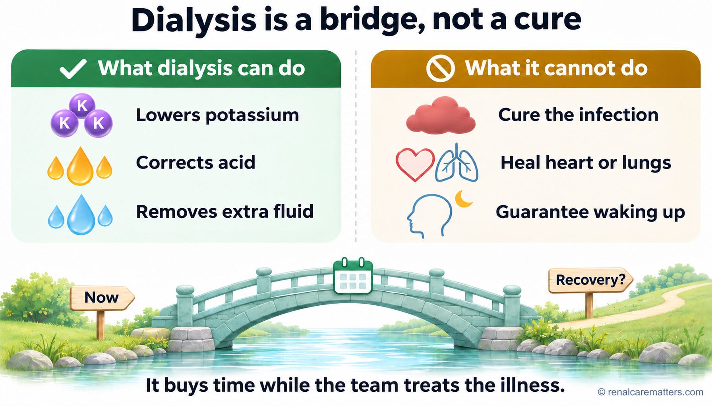
Dialysis is a bridge: it buys time while the team treats the illness. Whether a person recovers depends mostly on the illness itself.Ang dialysis ay isang tulay: nagbibigay ito ng panahon habang ginagamot ng team ang sakit. Ang paggaling ay nakasalalay higit sa lahat sa sakit mismo.Ang dialysis usa ka taytayan: naghatag kini og panahon samtang gitambalan sa team ang sakit. Ang pagkaayo nagdepende kasagaran sa sakit mismo.Ing dialysis metung yang tete: dadanan nang panaun kabang panulunan ning team ing sakit. Ing pamagaling masyadu yang makasalalay king sakit mismu.
The one idea to keepAng isang ideyang dapat tandaanAng usa ka ideya nga angay hinumdomanIng metung a ideyang dapat tandanan
Dialysis is a bridge, not a cure. It is worth crossing when there is a reasonable chance of reaching a place your loved one would want to be. The team's job is to tell you honestly whether that destination looks reachable, and to keep checking.Ang dialysis ay isang tulay, hindi lunas. Sulit itong tawirin kapag may makatwirang pagkakataong marating ang lugar na nanaisin ng iyong mahal sa buhay. Trabaho ng team na sabihin sa iyo nang tapat kung mukhang maaabot ang patutunguhang iyon — at patuloy na suriin ito.Ang dialysis usa ka taytayan, dili tambal nga makaayo. Angayan kining tabokon kung adunay makataronganong higayon nga maabot ang lugar nga gusto sa imong minahal. Trabaho sa team ang pagsulti kanimo nga matinud-anon kung daw maabot ba ang maong padulngan — ug padayon nga susihon kini.Ing dialysis metung yang tete, e gamut a pamagaling. Mamakabili yang lakwan nung atin makatuliran a pamikatagun a datangan ing lugal a buri ning kamaganakan mu. Obra ning team ing pamagsabi keka nang tapat nung abut ya ing patutunggan a ita — at tuluy-tuluy dang lawan.
Three separate questions the team is askingTatlong magkakahiwalay na tanong ng teamTulo ka lahi nga pangutana sa teamAtlung makabukud a kutang ning team
Doctors often talk about "prognosis" as if it were one thing. In the ICU it is really three questions, and the answers can be different. A person can survive but still need dialysis, or the kidneys can recover while the rest of the body stays very sick. Ask the team to answer each question separately.Madalas pag-usapan ng mga doktor ang "prognosis" na para bang iisang bagay lamang. Sa ICU, ito ay talagang tatlong tanong, at maaaring magkakaiba ang mga sagot. Maaaring mabuhay ang isang tao ngunit kailangan pa rin ng dialysis, o maaaring gumaling ang mga bato habang nananatiling napakasakit ang ibang bahagi ng katawan. Hilingin sa team na sagutin ang bawat tanong nang hiwalay.Kasagaran hisgotan sa mga doktor ang "prognosis" nga daw usa ra ka butang. Sa ICU, tulo gyud kini ka pangutana, ug mahimong lahi-lahi ang mga tubag. Mahimong mabuhi ang tawo apan kinahanglan gihapon og dialysis, o mahimong maayo ang mga bato samtang grabe pa ang sakit sa ubang bahin sa lawas. Hangyoa ang team nga tubagon ang matag pangutana nga bulag.Masyadung pisasabyan da reng doktor ing "prognosis" a anti mu mang metung yang bage. King ICU, atlu ya talagang kutang, at malyaring makayiba la reng sabat. Malyaring mabie ing metung a tau dapot kailangan na pa ing dialysis, o malyaring gumaling la reng batu kabang malala pa ing aliwang bage ning katawan. Kutnan me ing team bang sabatan la reng balang kutang nang makabukud.
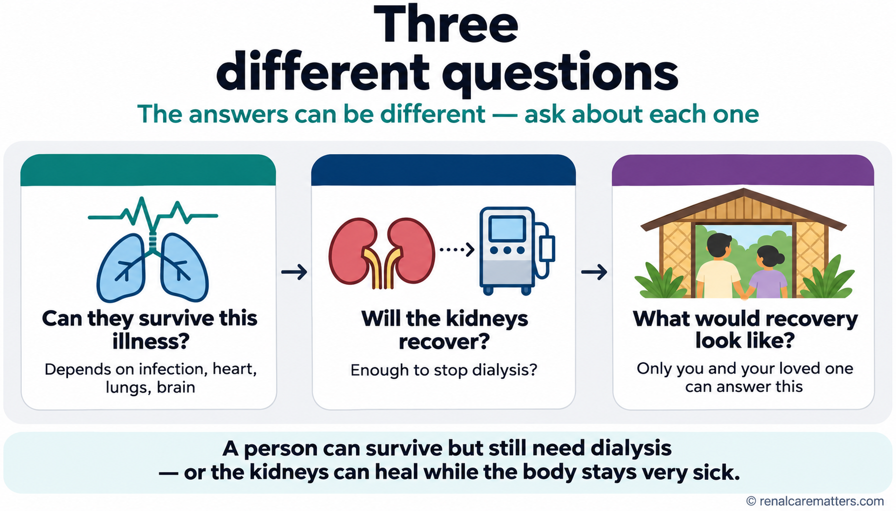
Three separate questions, three possibly different answers. Ask the team about each one.Tatlong magkahiwalay na tanong, tatlong maaaring magkakaibang sagot. Itanong sa team ang bawat isa.Tulo ka lahi nga pangutana, tulo ka tingali lahi nga tubag. Pangutan-a ang team bahin sa matag usa.Atlung makabukud a kutang, atlung malyaring makayibang sabat. Kutnan me ing team king balang metung.
- Can my loved one survive this illness? This depends on the infection, the heart and lungs, the brain, and how strong the person was before.Makakaligtas ba ang aking mahal sa buhay sa sakit na ito? Nakasalalay ito sa impeksyon, sa puso at baga, sa utak, at kung gaano kalakas ang tao bago nagkasakit.Makalahutay ba ang akong minahal niini nga sakit? Nagdepende kini sa impeksyon, sa kasingkasing ug baga, sa utok, ug kung unsa ka kusog ang tawo sa wala pa magkasakit.Makaligtas ya ba ing kamaganakan ku king sakit a iti? Makasalalay ya iti king impeksyon, king pusu at baga, king utak, at nung makananu ya kasikan ing tau bayu ya menyakit.
- If they survive, will the kidneys recover enough to stop dialysis? Many survivors do; some need dialysis for weeks, months, or permanently — more often when the kidneys were already weak.Kung makaligtas, gagaling ba ang mga bato nang sapat para itigil ang dialysis? Marami sa mga nakaligtas ang gumagaling; ang ilan ay nangangailangan ng dialysis nang ilang linggo, buwan, o habambuhay — mas madalas kung mahina na ang mga bato noon pa.Kung makalahutay, maayo ba ang mga bato nga igo aron hunongon ang dialysis? Daghan sa nakalahutay ang naayo; ang uban nagkinahanglan og dialysis sulod sa pipila ka semana, bulan, o hangtod sa kahangtoran — mas kasagaran kung huyang na ang mga bato kaniadto pa.Nung makaligtas ya, gumaling la ba reng batu nang sapat bang ituknang ing dialysis? Dakal karing mikaligtas ing gumaling; ing aliwa kailangan da ing dialysis king kilub da reng duminggu, bulan, o angga king kayabyayan — mas masyadu nung mayina na la reng batu dati pa.
- What would recovery look like for this person? Being awake and recognizing family? Walking again? Living at home? Would they accept regular dialysis to get there? These are questions only you and your loved one can answer.Ano ang magiging hitsura ng paggaling para sa taong ito? Gising at nakikilala ang pamilya? Nakakalakad muli? Nakatira sa bahay? Tatanggapin ba nila ang regular na dialysis para marating iyon? Ikaw at ang iyong mahal sa buhay lamang ang makakasagot sa mga tanong na ito.Unsa ang dagway sa pagkaayo alang niini nga tawo? Nagmata ug nakaila sa pamilya? Makalakaw pag-usab? Nagpuyo sa balay? Dawaton ba nila ang regular nga dialysis aron makaabot didto? Ikaw ug ang imong minahal lang ang makatubag niini nga mga pangutana.Nanu ing itsura ning pamagaling para king tau a iti? Mulala ya at kilala na ing pamilya? Makalakad ya pasibayu? Mabie ya king bale? Tanggapan da ba ing regular a dialysis bang datangan ita? Ika at ing kamaganakan mu mu ing makasabat karing kutang a reti.
Numbers are about groups, not about one personAng mga numero ay tungkol sa grupo, hindi sa iisang taoAng mga numero bahin sa grupo, dili sa usa ka tawoReng numeru tungkul la king grupu, e king metung a tau
In the largest study of dialysis timing in the ICU, about 44 of every 100 critically ill adults with severe AKI had died by 3 months, whether dialysis started early or later. Among survivors, roughly 6 to 10 of every 100 still needed dialysis at 3 months. These figures describe large groups. Your team can explain where your loved one seems to fit and how sure they are.Sa pinakamalaking pag-aaral tungkol sa tamang oras ng dialysis sa ICU, mga 44 sa bawat 100 na kritikal na may sakit na nasa hustong gulang na may malubhang AKI ang namatay sa loob ng 3 buwan, maaga man o huli nagsimula ang dialysis. Sa mga nakaligtas, mga 6 hanggang 10 sa bawat 100 ang nangangailangan pa rin ng dialysis sa 3 buwan. Inilalarawan ng mga numerong ito ang malalaking grupo. Maipapaliwanag ng iyong team kung saan tila nababagay ang iyong mahal sa buhay — at kung gaano sila katiyak.Sa pinakadakong pagtuon bahin sa husto nga oras sa dialysis sa ICU, mga 44 sa matag 100 ka kritikal nga masakiton nga hamtong nga adunay grabeng AKI ang namatay sulod sa 3 ka bulan, sayo man o ulahi nagsugod ang dialysis. Sa mga nakalahutay, mga 6 hangtod 10 sa matag 100 ang nagkinahanglan pa gihapon og dialysis sa 3 ka bulan. Kini nga mga numero naghulagway sa dagkong grupo. Mapatin-aw sa imong team kung asa daw nahiangay ang imong minahal — ug kung unsa sila kasigurado.King pekamaragul a pamanigaral tungkul king tamang oras ning dialysis king ICU, kasi 44 king balang 100 a matua a malala ing sakit at atin malalang AKI ing mete king kilub ning 3 bulan, agad man o atyu mibuklat ing dialysis. Karing mikaligtas, kasi 6 anggang 10 king balang 100 ing kailangan da pa ing dialysis king 3 bulan. Ilarawan da ning numeru a reti ing marangal a grupu. Apaliwanag na ning team mu nung nu ya bagay ing kamaganakan mu — at nung makananu lang siguradu.
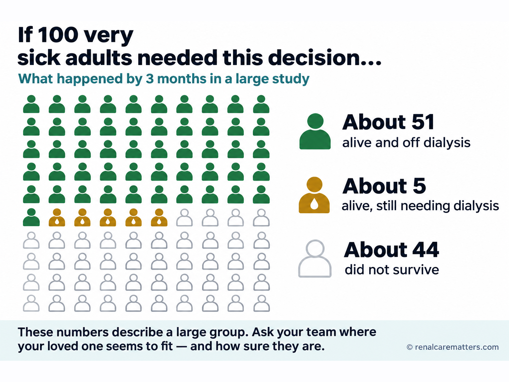
If 100 very sick adults faced this decision, about 51 were alive and off dialysis at 3 months, about 5 still needed dialysis, and about 44 did not survive. These numbers describe a group, not your loved one.Kung 100 malubhang may sakit na nasa hustong gulang ang humarap sa desisyong ito, mga 51 ang buhay at hindi na nagda-dialysis sa 3 buwan, mga 5 ang nangangailangan pa ng dialysis, at mga 44 ang hindi nakaligtas. Inilalarawan ng mga numerong ito ang isang grupo, hindi ang iyong mahal sa buhay.Kung 100 ka grabe og sakit nga hamtong ang nag-atubang niini nga desisyon, mga 51 ang buhi ug wala na mag-dialysis sa 3 ka bulan, mga 5 ang nagkinahanglan pa og dialysis, ug mga 44 ang wala makalahutay. Kini nga mga numero naghulagway sa usa ka grupo, dili sa imong minahal.Nung 100 a matua a malala ing sakit ing mikaharap king desisyun a iti, kasi 51 ing mabie at ala nang dialysis king 3 bulan, kasi 5 ing kailangan da pa ing dialysis, at kasi 44 ing e mikaligtas. Ilarawan da ning numeru a reti ing metung a grupu, e ing kamaganakan mu.
Why the team may suggest a "trial" — and what happens at the reviewBakit maaaring magmungkahi ang team ng "pagsubok" — at ano ang mangyayari sa pagrepasoNganong mosugyot ang team og "pagsulay" — ug unsa ang mahitabo sa pagsusi pag-usabNung obat magmungkahi ing team ning "pamanubuk" — at nanu ing malyari king pamanigaral pasibayu
Sometimes nobody can know at the start whether dialysis and the other ICU treatments will help someone recover in a way they would value. In that case the team may propose a time-limited trial: start dialysis, agree on what everyone is hoping to see, and set a date to meet again. A date on the chart is not a deadline for your loved one. It is a promise that the team will sit down with you and look honestly at what has changed.Minsan, walang makakaalam sa simula kung makakatulong ang dialysis at ang iba pang paggamot sa ICU upang gumaling ang isang tao sa paraang pahahalagahan nila. Sa ganitong kaso, maaaring magmungkahi ang team ng time-limited trial (pagsubok na may takdang panahon): simulan ang dialysis, magkasundo kung ano ang inaasahang makita ng lahat, at magtakda ng petsa para muling magkita. Ang petsa sa chart ay hindi deadline para sa iyong mahal sa buhay — ito ay pangako na uupo ang team kasama mo at tapat na titingnan kung ano ang nagbago.Usahay, walay makahibalo sa sinugdanan kung makatabang ba ang dialysis ug ang ubang pagtambal sa ICU aron maayo ang tawo sa paagi nga ilang pabilhan. Niini nga kaso, mosugyot tingali ang team og time-limited trial (pagsulay nga adunay gitakdang panahon): sugdan ang dialysis, magkasabot kung unsa ang gilauman nga makita sa tanan, ug magtakda og petsa aron magkita pag-usab. Ang petsa sa chart dili deadline alang sa imong minahal — saad kini nga molingkod ang team uban kanimo ug matinud-anon nga tan-awon kung unsa ang nausab.Kabang-kabang, alang makabalu king kapamulan nung makatulung ing dialysis at ing aliwang panulu king ICU bang gumaling ing metung a tau king paralan a pakamahalan da. Kaniting kaso, malyaring magmungkahi ing team ning time-limited trial (pamanubuk a atin takdang panaun): buklatan ing dialysis, pagkasundu nung nanu ing ipamanaya da ngan a akakit, at magtakda petsa bang mikit pasibayu. Ing petsa king chart e ya deadline para king kamaganakan mu — pangaku ya iti a mikmu ya ing team kayabe mu at tapat dang lawan nung nanu ing mebayu.
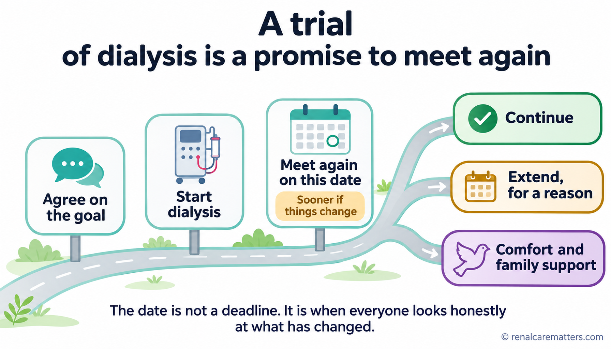
A trial of dialysis is a promise to meet again on a set date, or sooner if things change, and decide together which road to take.Ang pagsubok ng dialysis ay pangakong muling magkita sa takdang petsa, o mas maaga kung may magbago, at sama-samang pagpasyahan kung aling daan ang tatahakin.Ang pagsulay sa dialysis usa ka saad nga magkita pag-usab sa gitakdang petsa, o mas sayo kung adunay mausab, ug magkauban nga modesisyon kung asang dalan ang subayon.Ing pamanubuk ning dialysis metung yang pangaku a mikit pasibayu king takdang petsa, o mas agad nung atin mabayu, at samasamang pagpasyan nung nu nung dalan ing lakaran.
Things are moving toward the goal you agreed on. Dialysis continues, with another check-in.Gumagalaw ang mga bagay patungo sa layuning pinagkasunduan. Magpapatuloy ang dialysis, na may susunod na pagsusuri.Nagpaingon ang mga butang sa tumong nga gikasabutan. Magpadayon ang dialysis, uban ang sunod nga pagsusi.Mamagmasulung la reng bage paras king layunin a pigkasunduan yu. Ituloy ing dialysis, kayabe ing tutuking pamanigaral.
Something still blocks a clear answer — for example, sedation. The team names what it expects to learn and sets a new date.May humaharang pa rin sa malinaw na sagot — halimbawa, ang pampatulog na gamot. Sasabihin ng team kung ano ang inaasahan nitong malaman at magtatakda ng bagong petsa.Aduna pay nagbabag sa klarong tubag — pananglitan, ang pampatulog nga tambal. Isulti sa team kung unsa ang gilauman niining mahibal-an ug magtakda og bag-ong petsa.Atin pa mung manarang king malino a sabat — alimbawa, ing gamut a pampatudtud. Sabian ning team nung nanu ing ipamanaya nang abalu at magtakda yang bayung petsa.
If the goal is no longer reachable, dialysis can be stopped and care shifts fully to comfort and family support.Kung hindi na maaabot ang layunin, maaaring itigil ang dialysis at ang pangangalaga ay lilipat nang buo sa ginhawa at suporta sa pamilya.Kung dili na maabot ang tumong, mahimong hunongon ang dialysis ug ang pag-atiman mobalhin sa hingpit nga kahupayan ug suporta sa pamilya.Nung e na abut ing layunin, malyaring ituknang ing dialysis at ing pamanyaga lumipat ya nang buu king ginawa at suporta king pamilya.
If things change before the dateKung may magbago bago ang petsaKung adunay mausab sa wala pa ang petsaNung atin mabayu bayu ing petsa
The review can happen earlier. If your loved one becomes much sicker, or dialysis itself is causing serious problems, ask the team to meet sooner. Ask who will call you if things change overnight.Maaaring gawin nang mas maaga ang pagrepaso. Kung lumala nang husto ang kalagayan ng iyong mahal sa buhay, o ang dialysis mismo ang nagdudulot ng malubhang problema, hilingin sa team na magkita nang mas maaga. Itanong kung sino ang tatawag sa iyo kung may magbago sa gabi.Mahimong himuon nga mas sayo ang pagsusi. Kung mograbe pag-ayo ang kahimtang sa imong minahal, o ang dialysis mismo ang hinungdan sa seryosong problema, hangyoa ang team nga magkita nga mas sayo. Pangutan-a kung kinsa ang motawag kanimo kung adunay mausab sa gabii.Malyaring gawan nang mas agad ing pamanigaral. Nung lumala dapat ing kalagayan ning kamaganakan mu, o ing dialysis mismu ing sasabi ning malalang problema, kutnan me ing team bang mikit nang mas agad. Kutnan mu nung ninu ing tumawag keka nung atin mabayu king bengi.
When your loved one cannot speak for themselvesKapag hindi makapagsalita ang iyong mahal sa buhay para sa sariliKung dili makasulti ang imong minahal alang sa iyang kaugalingonNung e makasabi ing kamaganakan mu para king sarili na
If your loved one can understand and take part, their voice comes first, even if they can only nod or squeeze a hand. Sedation and infection can cloud thinking, so the team may check again when the person is more awake. If they cannot take part, the team will ask the family to help them understand what the patient would choose.Kung nakakaunawa at nakakalahok ang iyong mahal sa buhay, ang kanilang tinig ang mauuna — kahit tumango o pumisil lang sila ng kamay. Ang pampatulog na gamot at impeksyon ay maaaring magpalabo ng pag-iisip, kaya maaaring suriin muli ng team kapag mas gising na ang tao. Kung hindi sila makakalahok, hihilingin ng team sa pamilya na tulungan silang maunawaan kung ano ang pipiliin ng pasyente.Kung makasabot ug makaapil ang imong minahal, ang ilang tingog ang una — bisan og motango o mopiga lang sila sa kamot. Ang pampatulog nga tambal ug impeksyon mahimong makapalubog sa paghunahuna, busa susihon tingali pag-usab sa team kung mas nagmata na ang tawo. Kung dili sila makaapil, hangyoon sa team ang pamilya nga tabangan sila nga masabtan kung unsa ang pilion sa pasyente.Nung makaintindi at makalahuk ing kamaganakan mu, ing boses da ing mumuna — agyang tumangu o mamisil mu lang gamat. Ing gamut a pampatudtud at impeksyon malyaring palabuan ing pamisip, inya malyaring lawan pasibayu ning team nung mas mulala ne ing tau. Nung e la makalahuk, kutnan ning team ing pamilya bang tulungan dang aintindian nung nanu ing pilian ning pasyente.
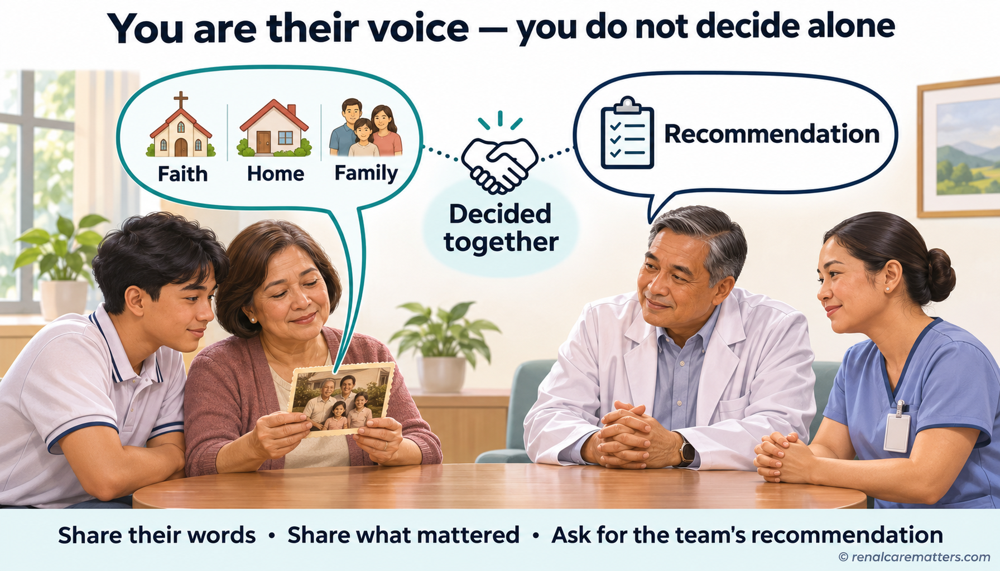
You bring your loved one's words and values; the team brings a recommendation. The decision is made together.Dala mo ang mga salita at pinahahalagahan ng iyong mahal sa buhay; dala ng team ang rekomendasyon. Sama-sama ninyong ginagawa ang desisyon.Dala nimo ang mga pulong ug gipabilhan sa imong minahal; dala sa team ang rekomendasyon. Magkauban ninyong himuon ang desisyon.Dala mu ing amanu at pepakamahalan ning kamaganakan mu; dala ning team ing rekomendasyun. Samasama yung gawan ing desisyun.
Share their wordsIbahagi ang kanilang mga salitaIpaambit ang ilang mga pulongIbahagi me ing amanu ra
What did they say about being very sick, machines, or dying? Did they write anything down or name someone to speak for them?Ano ang sinabi nila tungkol sa pagiging malubha ang sakit, mga makina, o kamatayan? May isinulat ba sila o pinangalanan ang isang taong magsasalita para sa kanila?Unsa ang ilang giingon bahin sa pagkagrabe sa sakit, mga makina, o kamatayan? Aduna ba silay gisulat o gingalan nga tawo nga mosulti alang kanila?Nanu ing sinabi ra tungkul king pamagmalalang sakit, makina, o kamatayan? Atin ba lang sinulat o pengalanan a tau a magsalita para kanila?
Share what matteredIbahagi ang mahalaga sa kanilaIpaambit ang importante kanilaIbahagi me ing mayalaga kanila
Faith, family, independence, being at home, not being a burden — what made life worth living for them?Pananampalataya, pamilya, kalayaan, pagiging nasa bahay, hindi pagiging pabigat — ano ang nagpahalaga sa buhay para sa kanila?Pagtuo, pamilya, kagawasan, pagpuyo sa balay, dili mahimong palas-anon — unsa ang naghimo sa kinabuhi nga bililhon alang kanila?Pamaniwala, pamilya, kalayaan, pamanatili king bale, e pamaging pabigat — nanu ing mekapamakabili king bie para kanila?
You do not decide aloneHindi ka nagpapasya nang mag-isaDili ka modesisyon nga mag-inusaraE ka mamagpasya nang bukud
The team should give you a recommendation based on the medical facts and on your loved one's wishes. You are their voice. You do not have to carry the decision by yourself.Dapat kang bigyan ng team ng rekomendasyon batay sa mga medikal na katotohanan at sa kagustuhan ng iyong mahal sa buhay. Ikaw ang kanilang tinig — hindi ang dapat magpasan ng desisyon nang mag-isa.Kinahanglan hatagan ka sa team og rekomendasyon base sa medikal nga kamatuoran ug sa gusto sa imong minahal. Ikaw ang ilang tingog — dili ang kinahanglang magpas-an sa desisyon nga mag-inusara.Dapat dakan na ka ning team ning rekomendasyon batay karing medikal a katutuan at king buri ning kamaganakan mu. Ika ing boses ra — e ika ing dapat magpasan ning desisyon nang bukud.
Dialysis and CPR are two separate decisionsMagkahiwalay na desisyon ang dialysis at CPRDuha ka lahi nga desisyon ang dialysis ug CPRAdwang makabukud a desisyon ing dialysis at CPR
Choosing dialysis does not mean choosing cardiopulmonary resuscitation (CPR) if the heart stops — and declining CPR does not mean declining dialysis. Each deserves its own conversation.Ang pagpili ng dialysis ay hindi nangangahulugang pagpili ng cardiopulmonary resuscitation (CPR) kung huminto ang puso — at ang pagtanggi sa CPR ay hindi nangangahulugang pagtanggi sa dialysis. Ang bawat isa ay nararapat sa sariling usapan.Ang pagpili og dialysis wala magpasabot nga pagpili og cardiopulmonary resuscitation (CPR) kung mohunong ang kasingkasing — ug ang pagdumili sa CPR wala magpasabot nga pagdumili sa dialysis. Ang matag usa angayan sa kaugalingong panag-istoryahanay.Ing pamamili ning dialysis e na buring sabian a pamamili ning cardiopulmonary resuscitation (CPR) nung tumuknang ing pusu — at ing pamanalikut king CPR e na buring sabian a pamanalikut king dialysis. Ing balang metung dapat atin sariling pisasabyan.
Stopping dialysis is not stopping careAng pagtigil ng dialysis ay hindi pagtigil ng pag-aalagaAng paghunong sa dialysis dili paghunong sa pag-atimanIng pamanuknang ning dialysis e ya pamanuknang ning pamanyaga
Dialysis may stop for two very different reasons. The happy one: the kidneys have recovered enough to do the work again. The harder one: the illness has made the goal unreachable, and continuing would add burden without real benefit. In that case, the team shifts its full attention to comfort — breathing, pain, restlessness, nausea — and to supporting the family.Maaaring itigil ang dialysis sa dalawang magkaibang dahilan. Ang masaya: gumaling na ang mga bato nang sapat upang muling gawin ang trabaho. Ang mas mahirap: ginawa ng sakit na hindi na maaabot ang layunin, at ang pagpapatuloy ay magdaragdag ng pasanin nang walang tunay na pakinabang. Sa ganitong kaso, ibinubuhos ng team ang buong atensyon sa ginhawa — paghinga, sakit, pagkabalisa, pagduduwal — at sa pagsuporta sa pamilya.Mahimong hunongon ang dialysis sa duha ka lahi kaayo nga rason. Ang malipayon: naayo na ang mga bato nga igo aron buhaton pag-usab ang trabaho. Ang mas lisod: gihimo sa sakit nga dili na maabot ang tumong, ug ang pagpadayon magdugang lang og kabug-at nga walay tinuod nga kaayohan. Niini nga kaso, ihatag sa team ang tibuok nga atensyon sa kahupayan — pagginhawa, kasakit, kabalaka, kasukaon — ug sa pagsuporta sa pamilya.Malyaring ituknang ing dialysis uli ning adwang makayibang dahilan. Ing masaya: migaling ne la reng batu nang sapat bang gawan da pasibayu ing obra. Ing mas marirap: ginawa ning sakit a e na abut ing layunin, at ing pamituloy magdagdag yamu pasanin nang alang tunay a pakinabang. Kaniting kaso, ibie ning team ing buung atensyon na king ginawa — pamangisnawa, sakit, pamagaligutgut, pamagsuka — at king pamanyuporta king pamilya.
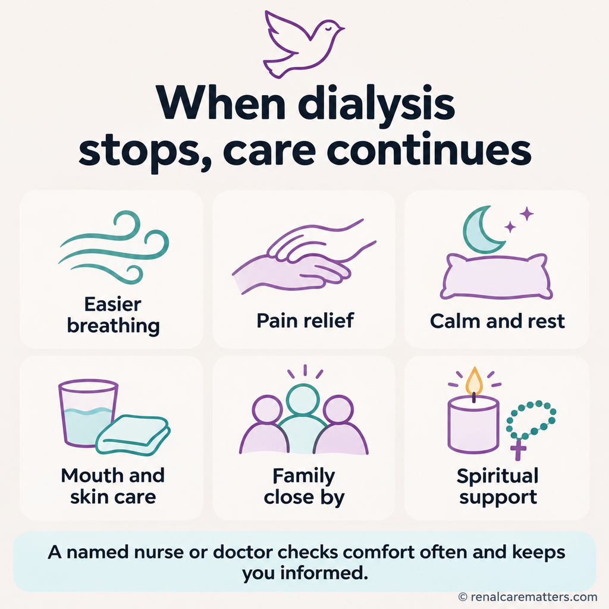
When dialysis stops, care continues: breathing, pain, rest, mouth and skin care, family, and faith.Kapag itinigil ang dialysis, nagpapatuloy ang pag-aalaga: paghinga, sakit, pahinga, pangangalaga sa bibig at balat, pamilya, at pananampalataya.Kung hunongon ang dialysis, magpadayon ang pag-atiman: pagginhawa, kasakit, pahulay, pag-atiman sa baba ug panit, pamilya, ug pagtuo.Nung ituknang ing dialysis, tuloy ya ing pamanyaga: pamangisnawa, sakit, pamagpainawa, pamanyaga king asbuk at balat, pamilya, at pamaniwala.
What families can expectAno ang maaaring asahan ng pamilyaUnsa ang mapaabut sa pamilyaNanu ing malyaring panayan ning pamilya
Someone on the team is named to check symptoms often and to update you. Medicines are chosen and dosed for kidneys that are not working. The time that follows is hard to predict: it may be hours, days, or longer. You may stay close, pray, play music, or bring a priest, pastor, imam, or anyone who matters to your family.May isang taong pinangalanan sa team na madalas susuri sa mga sintomas at magbibigay ng update sa iyo. Ang mga gamot ay pinipili at dinodosis para sa mga batong hindi gumagana. Mahirap hulaan ang panahong susunod — maaaring ilang oras, araw, o mas matagal. Maaari kang manatiling malapit, manalangin, magpatugtog ng musika, o magdala ng pari, pastor, imam, o sinumang mahalaga sa iyong pamilya.Adunay usa ka tawo sa team nga gingalan nga kanunay mosusi sa mga sintomas ug mohatag og update kanimo. Ang mga tambal gipili ug gidosis alang sa mga bato nga wala molihok. Lisod tag-anon ang panahon nga mosunod — mahimong pipila ka oras, adlaw, o mas dugay. Mahimo kang magpabilin nga duol, mag-ampo, magpatokar og musika, o magdala og pari, pastor, imam, o bisan kinsa nga importante sa imong pamilya.Atin metung a tau king team a pengalanan bang masyadu nang lawan reng sintomas at dakan naka update. Reng gamut pipilian da at didosis para karing batu a e gagana. Marirap ulaan ing panaun a tutuki — malyaring mangapilang oras, aldo, o mas matagal. Malyari kang manatili king malapit, manalangin, magpatugtug musika, o magdala pari, pastor, imam, o ninu man a mayalaga king pamilya mu.
Is stopping dialysis "giving up"?Ang pagtigil ba ng dialysis ay "pagsuko"?Ang paghunong ba sa dialysis "pagsurender"?Ing pamanuknang ning dialysis "pamanyuku" ya?
No. Letting an illness take its natural course, while keeping a person comfortable, is different from ending a life. Many faith traditions, including Catholic moral teaching, accept declining a treatment whose burdens outweigh its benefits for that person. If this weighs on you, ask to speak with a chaplain or your own spiritual adviser.Hindi. Ang hayaang tumakbo ang sakit sa natural nitong landas, habang pinapanatiling komportable ang tao, ay iba sa pagwawakas ng buhay. Maraming tradisyon ng pananampalataya, kabilang ang moral na turo ng Simbahang Katoliko, ang tumatanggap sa pagtanggi sa paggamot na ang pasanin ay higit sa pakinabang para sa taong iyon. Kung mabigat ito sa iyong kalooban, humiling na makausap ang chaplain o ang iyong sariling espirituwal na tagapayo.Dili. Ang pagtugot sa sakit nga modagan sa natural nga dalan niini, samtang gipabiling komportable ang tawo, lahi sa pagtapos sa kinabuhi. Daghang tradisyon sa pagtuo, lakip ang moral nga pagtulon-an sa Simbahang Katoliko, ang modawat sa pagdumili sa pagtambal nga ang kabug-at mas dako kaysa kaayohan alang nianang tawhana. Kung bug-at kini sa imong kasingkasing, hangyo nga makigsulti sa chaplain o sa imong kaugalingong espirituhanong magtatambag.Ali. Ing pamipabaya king sakit a lumakad king natural nang dalan, kabang pepanatili yang komportable ing tau, aliwa ya king pamanapus ning bie. Dakal a tradisyun ning pamaniwala, kayabe ing moral a turu ning Simbahang Katoliku, tatanggapan de ing pamanalikut king panulu a ing pasanin mas maragul king pakinabang para king tau a ita. Nung mabayat iti king lub mu, kutnan mu nung malyari meng kausapan ing chaplain o ing sarili mung espiritwal a tagapayu.
Questions you can bring to the family meetingMga tanong na maaari mong dalhin sa pulong ng pamilyaMga pangutana nga mahimo nimong dad-on sa miting sa pamilyaReng kutang a malyari mung dalan king pamipulung ning pamilya
Write these down, or show this page on your phone. It is fine to ask the same question twice, to ask for a translator, or to ask for the meeting in Tagalog, Cebuano, Kapampangan, or another language.Isulat ang mga ito, o ipakita ang pahinang ito sa iyong telepono. Ayos lang na itanong ang parehong tanong nang dalawang beses, humiling ng tagasalin, o hilingin na gawin ang pulong sa Tagalog, Cebuano, Kapampangan, o ibang wika.Isulat kini, o ipakita kini nga panid sa imong telepono. Okay ra nga pangutan-on ang parehas nga pangutana kaduha, mangayo og maghuhubad, o hangyoon nga himuon ang miting sa Tagalog, Cebuano, Kapampangan, o laing pinulongan.Isulat mu la reti, o ipakit me ing bulung a iti king telepono mu. Mayap mu ing kutnan ing pareung kutang makaduang besis, magkutang tagapamalikas, o kutnan nung malyaring Tagalog, Cebuano, Kapampangan, o aliwang amanu ing gamitan king pamipulung.
- Which problem is dialysis helping with right now?Aling problema ang tinutulungan ng dialysis ngayon?Unsang problema ang gitabangan sa dialysis karon?Nanung problema ing tutulungan ning dialysis ngeni?
- What are you hoping dialysis will help my loved one do — and how likely is that?Ano ang inaasahan ninyong matutulungan ng dialysis na gawin ng aking mahal sa buhay — at gaano ito kalamang?Unsa ang inyong gilauman nga matabangan sa dialysis nga mahimo sa akong minahal — ug unsa kini ka lagmit?Nanu ing ipamanaya yu a atulungan ning dialysis a gawan ning kamaganakan ku — at makananu ya kalamang?
- What is the best we can hope for, the worst we should prepare for, and what is most likely?Ano ang pinakamabuting maaasahan, ang pinakamasamang dapat paghandaan, at ano ang pinakamalamang?Unsa ang labing maayo nga malauman, ang labing grabe nga angay pangandaman, ug unsa ang labing lagmit?Nanu ing pekamayap a panayan, ing pekamalala a dapat paghandaan, at nanu ing pekamalamang?
- What signs will tell us it is working — or not working?Anong mga palatandaan ang magsasabi sa amin kung gumagana ito — o hindi?Unsang mga timailhan ang mosulti kanamo kung molihok ba kini — o dili?Nanung tanda ing mamagsabi kekami nung gagana ya — o ali?
- When will we meet again, and who will call us if things change sooner?Kailan tayo muling magkikita, at sino ang tatawag sa amin kung may magbago nang mas maaga?Kanus-a kita magkita pag-usab, ug kinsa ang motawag kanamo kung adunay mausab nga mas sayo?Kapilan tamu mikit pasibayu, at ninu ing tumawag kekami nung atin mabayu nang mas agad?
- If dialysis is still needed after the hospital, what would that mean for daily life and for cost?Kung kailangan pa rin ang dialysis pagkatapos ng ospital, ano ang ibig sabihin nito para sa pang-araw-araw na buhay at sa gastos?Kung kinahanglan pa gihapon ang dialysis human sa ospital, unsa ang kahulogan niini alang sa adlaw-adlaw nga kinabuhi ug sa gasto?Nung kailangan ne pa ing dialysis kaibat ning ospital, nanu ing buring sabian na iti para king aldo-aldo a bie at king gastus?
- If we focus on comfort, who will manage symptoms and keep us informed?Kung tututok kami sa ginhawa, sino ang mamamahala sa mga sintomas at magbibigay-alam sa amin?Kung motutok mi sa kahupayan, kinsa ang modumala sa mga sintomas ug mopahibalo kanamo?Nung tumutuk kami king ginawa, ninu ing mamahala karing sintomas at mamagbalita kekami?
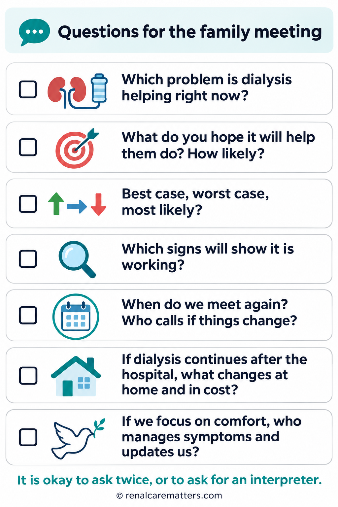
Save this card to your phone and bring it to the family meeting. Tap twice to open it full size.I-save ang card na ito sa iyong telepono at dalhin sa pulong ng pamilya. I-tap nang dalawang beses para buksan nang buo.I-save kini nga card sa imong telepono ug dad-a sa miting sa pamilya. I-tap kaduha aron ablihan nga bug-os.I-save me ing card a iti king telepono mu at dalan me king pamipulung ning pamilya. I-tap makaduang besis bang buksan nang buu.
- ICU
- Intensive care unit
Cost and access in the PhilippinesGastos at access sa PilipinasGasto ug access sa PilipinasGastus at access king Pilipinas
CRRT is not available in every hospital, and ICU dialysis can be expensive. Ask the social worker or billing office early about Philippine Health Insurance Corporation (PhilHealth) benefits and, in government hospitals, the Malasakit Center. Cost is a fair thing to raise, and it should never be the reason a decision is rushed or kept from you.Hindi available ang CRRT sa bawat ospital, at maaaring magastos ang dialysis sa ICU. Magtanong nang maaga sa social worker o billing office tungkol sa mga benepisyo ng Philippine Health Insurance Corporation (PhilHealth) at, sa mga ospital ng gobyerno, sa Malasakit Center. Makatwirang banggitin ang gastos — hindi ito dapat maging dahilan para madaliin ang desisyon o itago ito sa iyo.Dili available ang CRRT sa matag ospital, ug mahimong mahal ang dialysis sa ICU. Pangutana og sayo sa social worker o billing office bahin sa mga benepisyo sa Philippine Health Insurance Corporation (PhilHealth) ug, sa mga ospital sa gobyerno, sa Malasakit Center. Makataronganon nga hisgotan ang gasto — dili kini angayng mahimong rason nga dalidalion ang desisyon o itago kini kanimo.E available ing CRRT king balang ospital, at malyaring mal ing dialysis king ICU. Magkutang ka nang agad king social worker o billing office tungkul karing benepisyu ning Philippine Health Insurance Corporation (PhilHealth) at, karing ospital ning gobyernu, king Malasakit Center. Makatuliran ing pamanyabi king gastus — e ya dapat maging dahilan bang padalasdasan ing desisyon o isalikut keka.
Questions families often askMga tanong na madalas itanong ng pamilyaMga pangutana nga kanunay ipangutana sa pamilyaReng kutang a masyadung kutnan ning pamilya
One question organizes the decision
What can kidney replacement therapy (KRT) do for this patient, and how will we know whether it is helping them reach an outcome they value? This guide is built around that question for adults with acute kidney injury (AKI) in the intensive care unit (ICU). It covers urgent indications, prognostic communication, the time-limited trial, and the care that follows when KRT is stopped. For prescription, modality, vascular access, anticoagulation, and circuit troubleshooting, use the companion continuous renal replacement therapy (CRRT) reference; for prior wishes and family discussion outside the ICU, see Advance Care Planning.
Start with the physiology, because it decides what KRT can and cannot promise. The kidney's minute-to-minute jobs are solute clearance, potassium and hydrogen-ion excretion, and sodium-and-water balance. An extracorporeal circuit replaces these functions well; this is established physiology. It does not restore source control, myocardial performance, alveolar gas exchange, or cerebral function, and its effect on survival depends on whether the derangement it corrects is the thing threatening the patient. When hyperkalemia, acidemia, or pulmonary edema is the immediate threat, KRT is life-saving. When the threat is the underlying illness, KRT supports the patient while the team learns whether that illness is reversible.
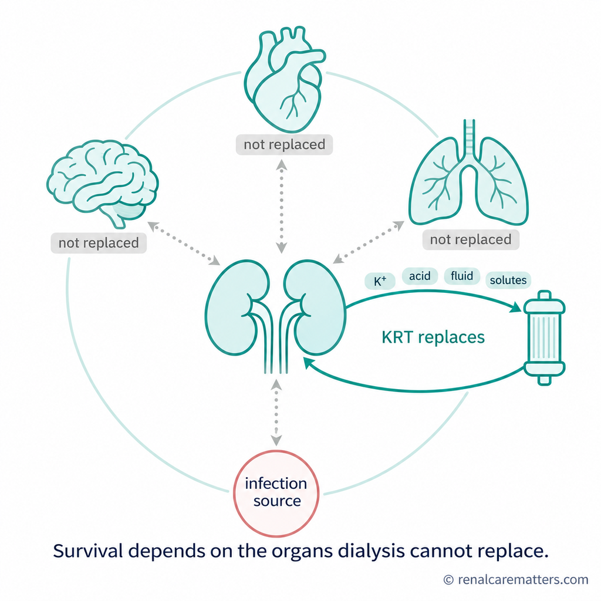
KRT replaces potassium, acid, fluid, and solute handling. Survival depends on the organs it does not replace.
- KRT
- Kidney replacement therapy
- K⁺
- Potassium
Urgent indications — treat and escalate first
Life-threatening hyperkalemia or acidemia persisting despite appropriate medical therapy; pulmonary edema with respiratory compromise that cannot be managed medically; serious uremic complications such as pericarditis or encephalopathy; and selected dialyzable intoxications. KDIGO (Kidney Disease: Improving Global Outcomes) 2012 advises initiating KRT emergently when life-threatening changes in fluid, electrolyte, or acid-base balance exist (ungraded). Temporize and start KRT promptly when it is consistent with known wishes and your hospital's emergency consent policy. Contact the surrogate and establish goals in parallel, not as a precondition, and attach an agreed reassessment plan from the first hour.
| Threat | Temporizing measures while KRT is arranged | What KRT adds |
|---|---|---|
| Hyperkalemia with electrocardiographic changes or rising trend | IV calcium for membrane stabilization; insulin with dextrose and inhaled β₂-agonist to shift potassium intracellularly; potassium binders; treat acidemia; remove potassium sources | Definitive removal — shifts wear off within hours, binders are slow. Intermittent or high-flow diffusive therapy lowers potassium fastest. |
| Metabolic acidemia | Treat the cause; bicarbonate where appropriate (watch sodium and volume load, and ventilatory capacity to clear the CO₂ generated) | Buffer delivery without sodium and volume overload |
| Volume overload / pulmonary edema | Diuretic challenge if urine-producing, noninvasive ventilation, vasodilators where blood pressure permits | Controlled ultrafiltration, independent of urine output |
| Uremic complications (pericarditis, encephalopathy, bleeding) | Exclude competing causes — sedation, sepsis, hepatic encephalopathy, hypoglycemia, structural brain injury | Solute clearance; neurologic response may lag |
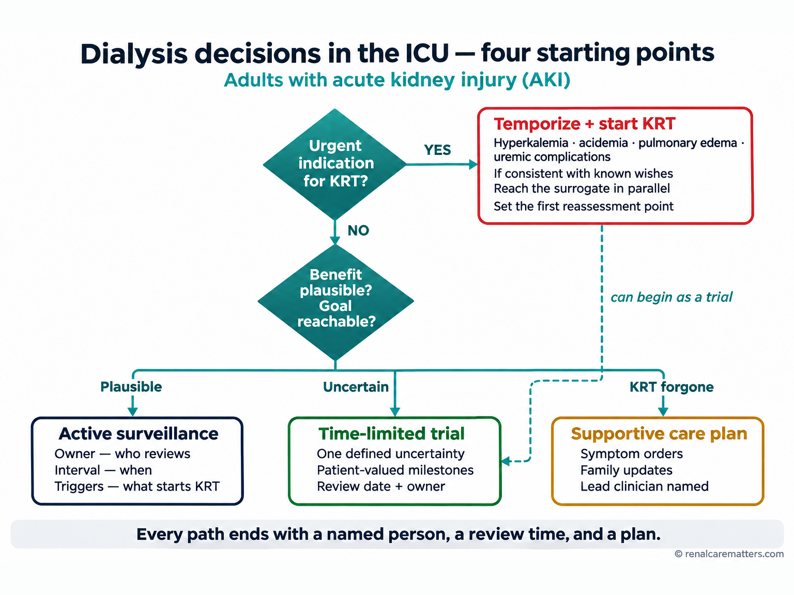
The four starting points for a dialysis decision in the ICU. Every path ends with a named person, a review time, and a plan — including the path where dialysis is not used.
- ICU
- Intensive care unit
- KRT
- Kidney replacement therapy
- AKI
- Acute kidney injury
What the timing trials show — and what they do not
Six randomized trials and an individual-patient meta-analysis now define timing for patients without an urgent indication. The consistent finding is that a pre-emptive start does not reduce mortality, while a watchful strategy spares a large minority from ever receiving KRT. The one positive trial (ELAIN) was single-center and enrolled earlier-stage AKI; the larger multicenter trials did not replicate its effect. The boundary is the second Artificial Kidney Initiation in Kidney Injury trial (AKIKI 2): once oliguria or azotemia is prolonged, deferring further gains nothing and may harm.
| Trial | Population | Comparison | Primary result | Practice signal |
|---|---|---|---|---|
| ELAIN (Early vs Late Initiation of renal replacement therapy in critically ill patients with AKI), 2016 | 231 patients, single German center; KDIGO stage 2 plus plasma neutrophil gelatinase-associated lipocalin (NGAL) >150 ng/mL | Within 8 h of stage 2 vs within 12 h of stage 3 | 90-day mortality 39.3% vs 54.7% (hazard ratio [HR] 0.66) | Positive but not replicated; small, single-center |
| AKIKI (Artificial Kidney Initiation in Kidney Injury), 2016 | 620 patients, KDIGO stage 3 on ventilation and/or catecholamines | Immediate vs delayed (conventional criteria or oliguria >72 h) | 60-day mortality 48.5% vs 49.7% | 49% of the delayed arm never received KRT; catheter bloodstream infection 10% vs 5% |
| IDEAL-ICU (Initiation of Dialysis Early versus Delayed in the ICU), 2018 | 488 patients, early septic shock with failure-stage AKI | Within 12 h vs after 48 h if no recovery | 90-day mortality 58% vs 54%; stopped for futility | 38% of the delayed arm never received KRT |
| STARRT-AKI (Standard versus Accelerated Initiation of Renal-Replacement Therapy in Acute Kidney Injury), 2020 | 2,927 patients in the modified intention-to-treat analysis, multinational | Within 12 h of eligibility vs standard (conventional indications or AKI >72 h) | 90-day mortality 643/1,465 (43.9%) vs 639/1,462 (43.7%); relative risk 1.00 (95% CI 0.93–1.09) | KRT used in 96.8% vs 61.8%; dependence among 90-day survivors 85/814 (10.4%) vs 49/815 (6.0%); adverse events 23.0% vs 16.5% |
| Individual-patient meta-analysis, 2020 | 9 trials, 1,879 patients with severe AKI | Delayed vs early | 28-day mortality 44% vs 43%; risk ratio 1.01 (0.91–1.13); no heterogeneity | 42% of the delayed group never received KRT |
| AKIKI 2, 2021 | 278 patients, KDIGO stage 3 with oliguria >72 h or blood urea nitrogen (BUN) >112 mg/dL | Start now (delayed) vs postpone further until mandatory indication or BUN 140 mg/dL | KRT-free days to day 28: 12 vs 10 (no difference) | Adjusted 60-day mortality HR 1.65 (1.09–2.50) with the more-delayed strategy — a ceiling on waiting |
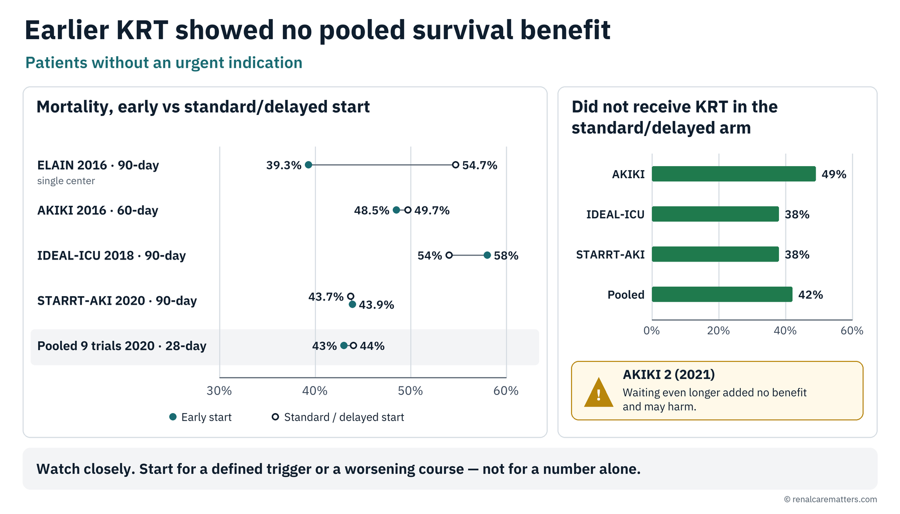
Early and standard starts land at similar mortality; a large share of deferred-arm patients never need KRT; waiting beyond conventional criteria adds nothing.
- KRT
- Kidney replacement therapy
- ELAIN
- Early vs Late Initiation of renal replacement therapy trial
- AKIKI
- Artificial Kidney Initiation in Kidney Injury trials
- IDEAL-ICU
- Initiation of Dialysis Early versus Delayed in the ICU trial
- STARRT-AKI
- Standard versus Accelerated Initiation of Renal-Replacement Therapy in AKI trial
Reading the absolute numbers
In STARRT-AKI the accelerated strategy produced no mortality benefit and an absolute increase of 4.4 percentage points in KRT dependence among survivors (10.4% vs 6.0%; number needed to harm about 23) and 6.5 points in adverse events (number needed to harm about 15, mainly hypotension and hypophosphatemia). These figures belong to patients without an immediate indication; they do not apply to the patient with refractory hyperkalemia.
Three post hoc analyses refine this. When McCoy and colleagues (2025) restricted the comparison to the 1,184 participants who received at least six days of KRT (a proxy for patients who would have been dialyzed under usual care), the dependence signal shrank to a nonsignificant relative risk of 1.21 (0.84–1.78). This suggests that much of the excess dependence reflects starting KRT in patients who would otherwise have recovered without it, rather than starting slightly earlier (evidence-supported inference). Among standard-arm patients who did receive KRT, longer deferral was not associated with higher mortality after accounting for immortal-time bias (Jeong et al., 2025). And among the 432 participants with pre-existing chronic kidney disease (CKD), the accelerated strategy roughly tripled the odds of 90-day dependence (adjusted odds ratio 3.18; 1.41–7.91), with no such effect in patients without CKD (interaction p = 0.009; Bagshaw et al., 2022). For a patient with poor kidney reserve, an unnecessary start carries a specific cost.
Bottom line for timing
Without an urgent indication, monitor actively and start for a defined trigger or persistent severe AKI with a deteriorating trajectory; do not start pre-emptively for a number alone (strong randomized evidence). Do not extend waiting indefinitely once oliguria or azotemia is prolonged (one moderate-sized trial; mortality signal adjusted, not primary). The KDIGO 2026 AKI and acute kidney disease (AKD) guideline update, still in preparation after public review when this page was checked, revises timing, modality, dosing, and discontinuation guidance; re-check its final wording before publication-dependent decisions.
Give three separate prognoses — and keep the denominators
Families hear "prognosis" as one number. In AKI requiring dialysis it is three linked estimates, and conflating them is the commonest source of miscommunication. A patient can recover kidney function and remain critically ill, or leave the ICU alive and dialysis-dependent.
| Question | What to review with the team |
|---|---|
| 1. Can the patient survive the critical illness? | Reversibility of the underlying illness, source control, trend in shock and respiratory support, neurologic course, baseline function and frailty, and the overall trajectory of organ failure over 24–72 hours. |
| 2. If the patient survives, could the kidneys recover enough to come off dialysis? | Baseline kidney function and reserve, cause and duration of AKI, urine output trend, and the ability to maintain volume and metabolic control when KRT is reduced or paused safely. On-treatment creatinine and urea reflect the circuit as much as the kidney. |
| 3. What could recovery look like for this person? | Ability to interact, physical function, likely care setting, rehabilitation needs, and the possibility of ongoing dialysis. Ask which outcomes the patient would accept and what burdens they would take on for a chance to reach them. |
Anchor numbers — with their denominators
When quoting a study, say which of three figures you mean: overall survival, dialysis dependence among survivors, or dialysis-free survival in the whole cohort. STARRT-AKI shows how far apart these sit. In the standard arm, 43.7% died by day 90 and 6.0% of confirmed survivors remained dependent, so roughly 52% of all randomized patients (766 of 1,462) were alive and free of KRT at 90 days. The same trial can therefore be summarized truthfully as "about 44% died," "about 94% of survivors were off dialysis," or "about half were alive and off dialysis." Choose the one that answers the family's actual question, and say which it is.
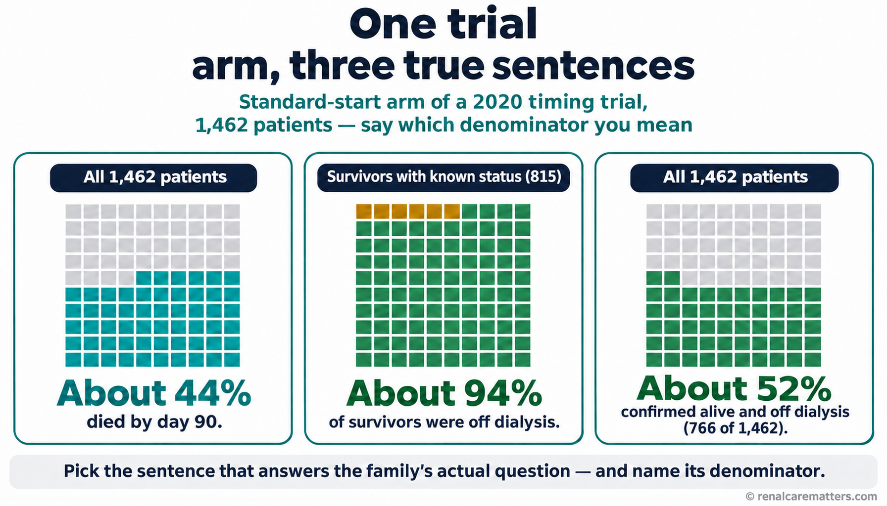
The same 1,462 patients support three true sentences. Name the denominator every time you quote a number.
| Source | Population | Survival | Dialysis status | Function / quality of life |
|---|---|---|---|---|
| STARRT-AKI (2020) | Severe AKI, no urgent indication | 90-day mortality ~44% in both arms | 6.0–10.4% dependent among 90-day survivors | — |
| Wang et al. (2024), STARRT-AKI post hoc | 1,616 patients aged ≥65 years | 90-day mortality 50.4% vs 35.6% in younger patients | 8.7% vs 7.8% dependent (no significant difference); frailty raised mortality, not dependence | — |
| Wald et al. (2015), Ontario population cohort | All ICU dialysis-requiring AKI, 1996–2010 | 90-day mortality fell from 50% to 45% | About 25% of 90-day survivors dialysis-dependent | — |
| SALTO (Chaïbi et al., 2023), AKIKI long-term follow-up | Severe AKI on organ support | 3-year survival 39.4% | Chronic dialysis in 5% of day-90 survivors; worsening kidney function in 26% of those tested | Median EQ-5D (EuroQol five-dimension) index 0.67 among respondents |
Survivors of AKI in critical illness report larger deficits in physical than in cognitive or mental domains, and the deficits track AKI severity and KRT use (McNicholas et al., 2023; Mayer et al., 2022). These are observational associations, confounded by severity of the underlying illness, but they are what families mean when they ask "will she be herself again?"
A structure for the conversation
Describe the best plausible, worst plausible, and most likely course, each with a time horizon and the findings that would move the estimate. The Best Case/Worst Case framework, developed for high-stakes surgical decisions, shifted conversations from an isolated problem and its fix toward a choice between trajectories that included functional decline; observer-rated shared decision-making scores rose from a median of 41 to 74 after training (Taylor et al., 2017). The evidence is pre-post and from surgery, but the structure transfers directly to the ICU dialysis decision.
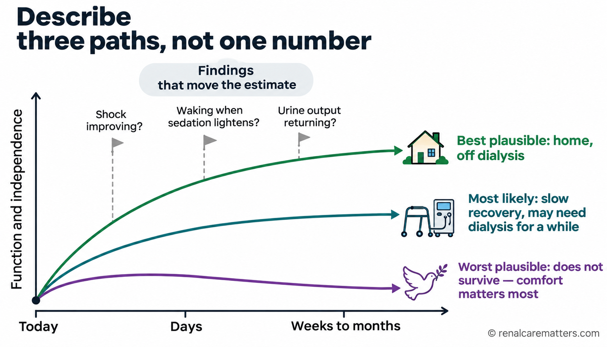
Describe best plausible, most likely, and worst plausible paths, and name the findings that would move the estimate.
Put high-risk cohorts in context — never use them as exclusion rules
Some populations carry sobering outcome data. These numbers inform a conversation; they do not settle one. They come from selected, mostly single- or dual-center cohorts in which the decision to start KRT was itself shaped by clinicians' expectations, so the comparison between treated and untreated patients is confounded by indication.
| Population | Evidence to use | Clinical application |
|---|---|---|
| Cirrhosis with dialysis-treated AKI | In a five-hospital cohort, 51 of 341 patients (15%) not listed for liver transplantation were alive six months after starting KRT; hepatorenal syndrome (HRS) and acute tubular necrosis (ATN) carried similar adjusted risk (Allegretti et al., 2018). In 372 transplant-ineligible patients at one center, six-month survival was 15% with KRT vs 0% without; 88% of those started on KRT died in the ICU, and among survivors 86% with HRS-AKI vs 27% with ATN remained dialysis-dependent at six months (Diaz et al., 2024). | Ask hepatology whether KRT could bridge to transplantation, candidacy assessment, or recovery from a reversible insult such as ATN or HRS responding to vasoconstrictors (Nadim et al., 2024). Distinguish pending evaluation from established ineligibility, and revisit as candidacy and organ support change. |
| Recent allogeneic hematopoietic stem cell transplantation (allo-HSCT) | Of 529 adults admitted to the ICU within one year of allo-HSCT at two centers, 111 received KRT for AKI and 97 (87.4%) died within 90 days; adjusted 90-day mortality was 6.6-fold that of non-transplanted patients (Kim et al., 2024). | Ask the transplant team about disease status, reversibility of complications (veno-occlusive disease, thrombotic microangiopathy, infection), and feasible next treatments. Quote the estimate with its setting; the subgroups with 100% mortality were small. |
| Stage IV solid tumors | Among 465 patients with stage IV cancer and AKI in a comprehensive cancer center ICU, receipt of KRT (176 patients) was not associated with inpatient mortality or post-discharge survival after adjustment (Abudayyeh et al., 2020). | Ask oncology what treatment is realistically available after the ICU. Frame KRT around what it could make possible, such as time at home or a next line of therapy, rather than around the kidney alone. |
| Pre-existing CKD, older age, frailty | CKD: 14% vs 8% dependence at 90 days, and greater harm from an accelerated start (Bagshaw et al., 2022). Age ≥65: higher mortality, not higher dependence; frailty (Clinical Frailty Scale [CFS] ≥5): higher mortality (Wang et al., 2024). | Use baseline function and kidney reserve to discuss burdens and the chance of ongoing dialysis. Ask what quality of life means to this person and which supports would make an outcome acceptable. |
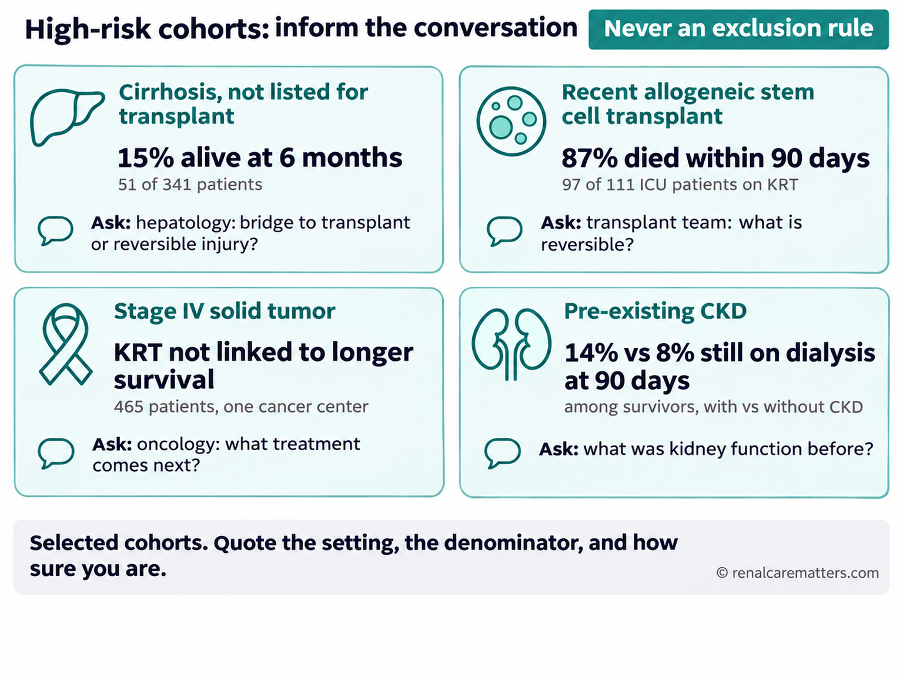
Each cohort number comes with a denominator and a colleague to call. These figures inform the conversation; they never decide eligibility.
- KRT
- Kidney replacement therapy
- CKD
- Chronic kidney disease
Guardrails
Keep subgroup mortality and severity scores out of eligibility rules. Separate resource constraints (CRRT availability, transfer, staffing) from the clinical assessment and from the patient's values, and name them honestly when they apply. A prognosis is an estimate with a confidence interval; tell families how certain you are.
Design the trial around one specific uncertainty
An American Thoracic Society (ATS) workshop defined a time-limited trial in critical illness as a collaborative plan among clinicians and a patient or surrogate to use life-sustaining therapy for a defined duration, after which the patient's response informs the decision to continue recovery-directed care, transition to comfort-focused care, or extend the trial (Kruser et al., 2024). Its 16 essential elements fall into four phases: consider, plan, support, reassess. The workshop also warned that a poorly implemented trial can cause harm, for example one that is really a delayed withdrawal or is too short for the biology.
Use a trial when benefit is plausible, uncertainty is meaningful, and the clinical course over days can resolve it (Scherer & Holley, 2016). Choose a review interval suited to the uncertainty and the expected biology, and review sooner if the patient deteriorates, KRT causes significant harm, or a new decision arises.
| Uncertainty being tested | Markers of progress | Typical first review (illustrative) |
|---|---|---|
| Is septic shock reversible? | Falling vasopressor dose, lactate clearance, source control achieved | 48–72 hours |
| Can she interact meaningfully? | Response during a safe sedation lightening; competing causes excluded | After sedation can be safely reduced and metabolic derangements corrected |
| Is this HRS-AKI responding, or is a transplant evaluation feasible? | Response to vasoconstrictors, hepatology decision on candidacy | Linked to the hepatology timeline, not a fixed number of days |
| Will the kidneys recover? | Rising urine output, stable potassium and volume during a pause | Days to weeks — a survivor's dependence alone is rarely a reason to stop in the first days |
In a before-and-after quality-improvement study in three medical ICUs, training physicians to use time-limited trials as the default approach for patients with advanced illness increased formal family meetings (60% to 96%), shortened median ICU stay (8.7 to 7.4 days), and reduced invasive procedures such as mechanical ventilation (86% to 73%), with unchanged hospital mortality (58% in both periods; Chang et al., 2021). The design limits causal inference and the intervention covered ICU care broadly; present the trial as a way to structure shared decisions under uncertainty rather than as a proven outcome-changing intervention.
Copy-ready trial note
A blank template for your documentation system. It contains no patient information and prints without JavaScript.
TIME-LIMITED TRIAL OF KRT — ICU KRT indication and urgency: Potentially reversible problem / what we hope to learn: Decision-making capacity; patient wishes; surrogate (if applicable): Patient-valued outcome and burdens the patient would accept: Recommended treatment and agreed scope of support (incl. CPR status, documented separately): Baseline findings: Markers of patient-centered progress: Findings that would prompt earlier reassessment: Review date/time: Participants: Responsible clinician: At review, discuss: continue / extend with new milestones and date / stop KRT and implement agreed care plan Symptom support and family communication plan: Who hands this plan over at shift or service change:
At the review: three lenses
Is KRT doing its job? Potassium controlled, acidemia corrected, fluid removed as prescribed, circuit tolerated.
Is the underlying illness reversing? Less vasopressor support, better oxygenation, source controlled, other organs stable or improving.
Is the patient moving toward what they valued — for example, sustained interaction when sedation can be safely reduced?
A biochemical response shows that KRT is working; it does not show that the outcome that justified the trial is within reach. In a trial for possible uremic encephalopathy, evaluate sedative accumulation (many sedatives and their metabolites accumulate in AKI), sepsis-associated encephalopathy, other metabolic causes, and structural brain injury before attributing delayed awakening to uremia. At the checkpoint, agree to continue, extend for a named reason with a new date, or stop KRT and implement the agreed care plan.
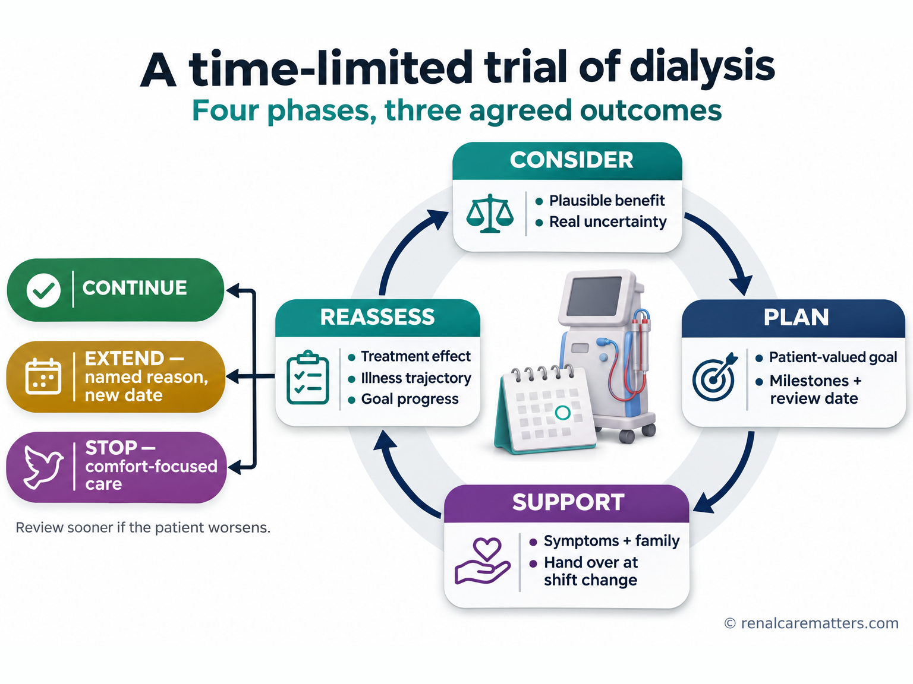
A time-limited trial moves through four phases — consider, plan, support, reassess — and every review ends in one of three agreed outcomes.
- KRT
- Kidney replacement therapy
- ATS
- American Thoracic Society
A trial in practice Fictional case · illustrative interval
A previously independent 68-year-old with septic shock from a perforated viscus develops oliguric AKI and refractory hyperkalemia after source-control surgery. The team temporizes and starts CRRT, consistent with known wishes and local consent procedures. Her daughter explains that her mother would accept short-term intensive support for a real chance of waking and recognizing her grandchildren, but would not want to live permanently dependent on machines. The ICU and nephrology teams agree to meet again in 48 hours, earlier if shock worsens, and to track vasopressor dose, oxygenation, tolerance of fluid removal, and interaction when sedation can be safely lightened.
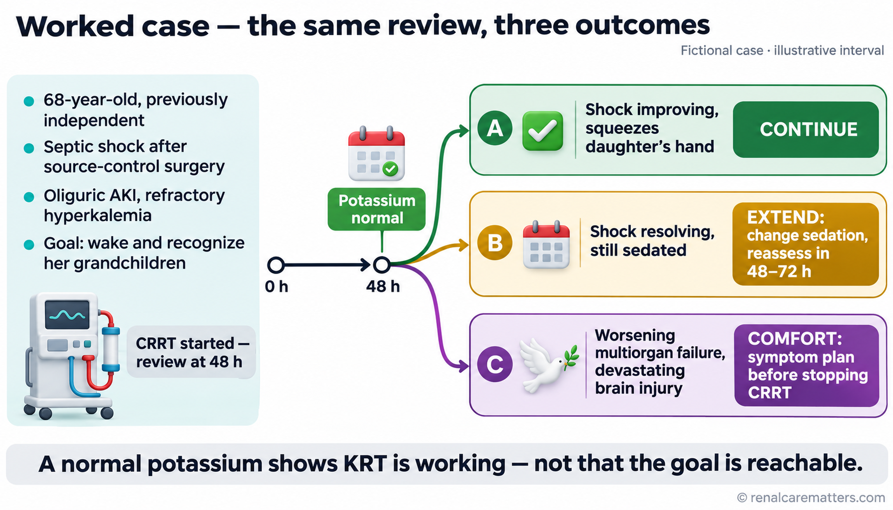
A normal potassium shows that KRT is working, not that the goal is reachable. The review turns on what changed elsewhere.
- AKI
- Acute kidney injury
- CRRT
- Continuous renal replacement therapy
- KRT
- Kidney replacement therapy
Two different stops — two different plans
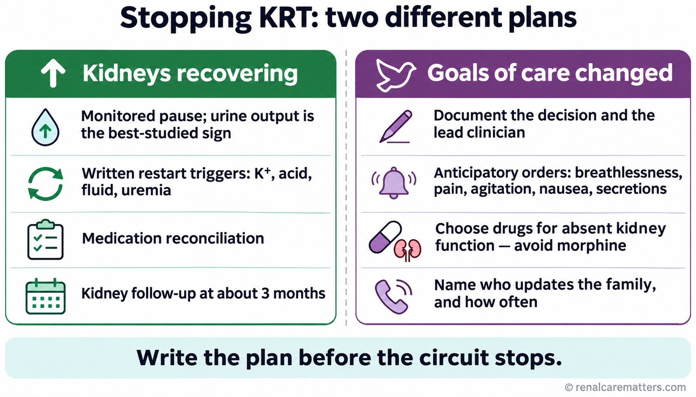
A recovery stop and a goal-directed stop need different orders. Write the plan before the circuit stops.
- KRT
- Kidney replacement therapy
- K⁺
- Potassium
Stopping because the kidneys are recovering
KDIGO 2012 advises discontinuing KRT when it is no longer required, either because intrinsic function can meet the patient's needs or because KRT is no longer consistent with the goals of care (ungraded) — and suggests not using diuretics to hasten recovery or shorten KRT (2B). Urine output before discontinuation is the most-studied predictor of successful liberation, but it is imperfect: pooled sensitivity 66% and specificity 74% across observational studies, with no validated threshold (Katulka et al., 2020). Plan a monitored pause with explicit restart criteria for potassium, acidemia, volume, and uremic symptoms.
If the patient leaves hospital with ongoing AKD or still on dialysis, assign follow-up for laboratory checks, medication reconciliation, and dialysis reassessment, and reassess for resolution or new or worsening CKD at about three months (KDIGO 2012). Survivors of critical illness with AKI often carry weakness, cognitive change, and recurrent AKI risk; rehabilitation and nutrition belong in the plan (Vijayan et al., 2021). The site's 90-day AKI recovery guide details this pathway.
Stopping because the goals of care have changed
- Confirm and document the decision, the reasoning, the treatments that continue, and the lead clinician.
- Agree anticipatory orders with ICU nursing, palliative care, and pharmacy for dyspnea, pain, agitation or delirium, nausea, myoclonus, and secretions.
- Choose drugs for absent kidney function. Avoid morphine where possible, because its active glucuronide metabolites accumulate and cause sedation, myoclonus, and respiratory depression; fentanyl, or carefully titrated hydromorphone, is generally preferred. Reduce doses of renally cleared antiemetics and sedatives. Doses chosen while KRT was running will behave differently once it stops.
- Address breathlessness from volume. Opioids, positioning, and a fan help; in selected patients a brief, agreed ultrafiltration session may serve a comfort goal. Decide this explicitly rather than by default.
- Prepare the family for uncertainty. The interval after stopping depends on residual kidney function and the other organ supports; it may be hours, days, or longer. Offer bedside presence, rituals, and spiritual support as desired.
- Name who checks symptoms and who updates the family, and how often. Use local comfort-care protocols for orders, line removal, and monitoring de-escalation.
The KDIGO Controversies Conference on supportive care identified symptom burden and its under-treatment as a central gap across kidney failure, and placed conservative and palliative care within core kidney care rather than outside it (Davison et al., 2015). An ICU decision to stop KRT is the most acute form of that work.
How certain is each claim?
Certainty is labeled on the ladder used throughout this site: strong clinical evidence (replicated randomized data on patient-important outcomes), evidence-supported inference, observational association, guideline or consensus, and established physiology.
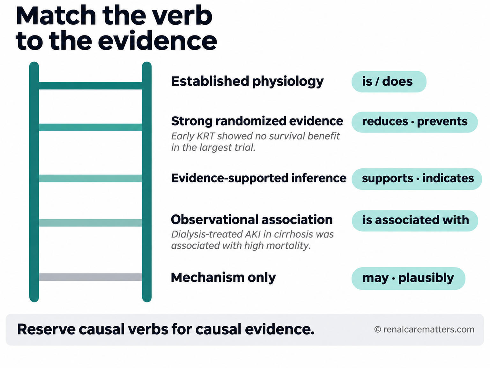
Match the verb to the strength of the evidence; reserve causal verbs for causal evidence.
- KRT
- Kidney replacement therapy
| Claim | Certainty | Main sources |
|---|---|---|
| KRT corrects potassium, acid, and volume but not the underlying illness | Established physiology | — |
| Pre-emptive KRT without an urgent indication does not lower mortality | Strong clinical evidence | STARRT-AKI; AKIKI; IDEAL-ICU; individual-patient meta-analysis |
| Pre-emptive KRT increases adverse events and 90-day dependence | Strong (adverse events); evidence-supported inference (dependence mechanism) | STARRT-AKI; McCoy et al., 2025 |
| Prolonged deferral beyond conventional criteria may increase mortality | Single randomized trial, adjusted secondary analysis | AKIKI 2 |
| Pre-existing CKD amplifies dependence risk with an accelerated start | Post hoc randomized subgroup | Bagshaw et al., 2022 |
| High mortality in cirrhosis, allo-HSCT, and stage IV cancer cohorts | Observational association, confounded by indication | Allegretti; Diaz; Kim; Abudayyeh |
| Structured, proactive family communication reduces family distress | One randomized trial positive; a larger trial improved communication but not distress | Lautrette et al., 2007; White et al., 2018 |
| Time-limited trials reduce nonbeneficial ICU care | Before-after association only | Chang et al., 2021; ATS definition |
| Urine output predicts successful liberation from KRT | Observational; moderate accuracy, no validated threshold | Katulka et al., 2020 |
| Proactive palliative care or ethics consultation helps define goals | Guideline, conditional, low certainty | SCCM 2025; ESICM 2024 |
What may change
The KDIGO 2026 AKI/AKD guideline completed public review in May 2026 and was being prepared for publication when this page's evidence was checked (8 November 2026). Its final recommendations on KRT timing, modality, dosing, and discontinuation may refine the timing and liberation statements above; this page will be updated after final publication.
Editorial note. The topic of this guide was inspired by Kathleen M. McFadden and Samantha L. Gelfand, "Ethics and Palliative Care in AKI and ICU Nephrology," Nephrology Self-Assessment Program, 25(2), August 2026. The prose, cases, tables, and layout here are original, and every clinical claim is anchored to the separately verified sources listed under References.